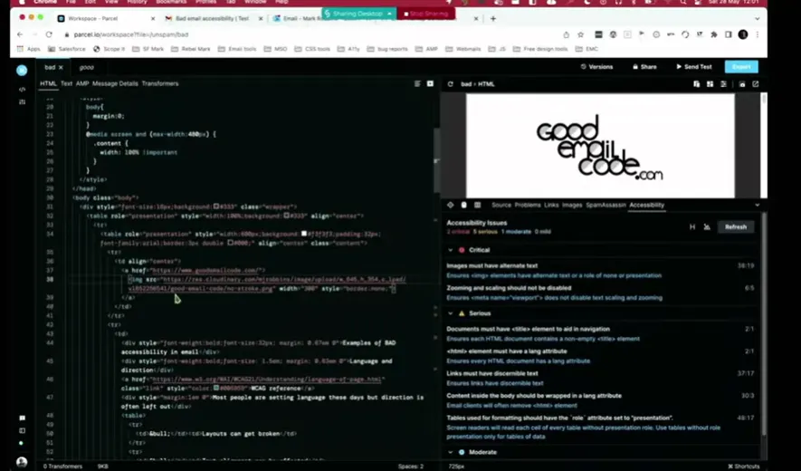
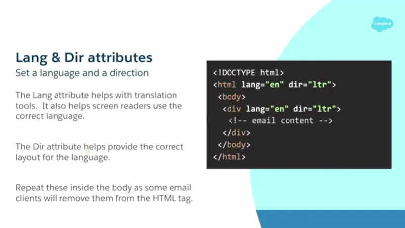
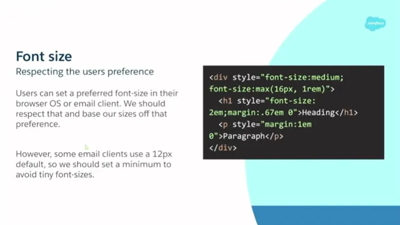
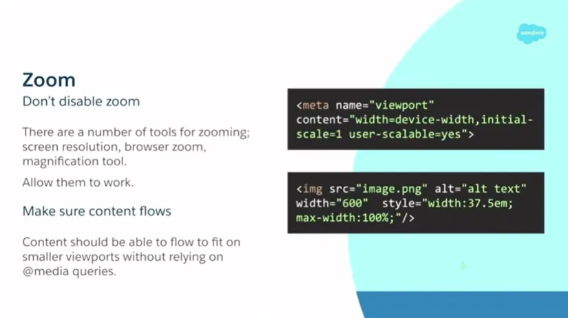
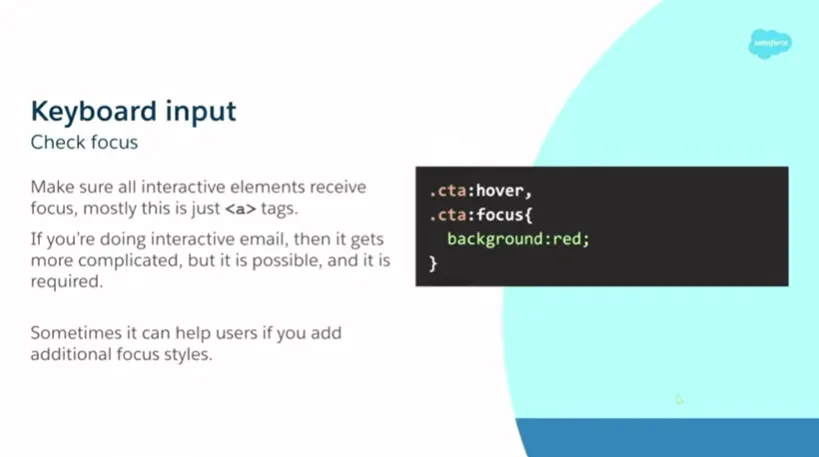
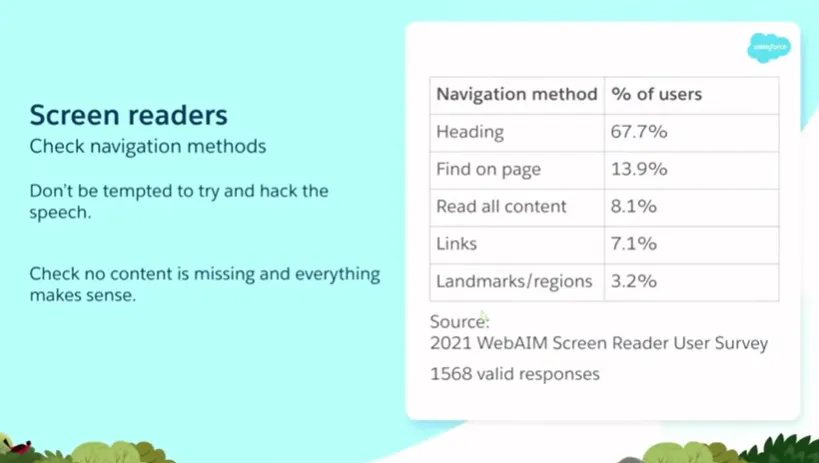
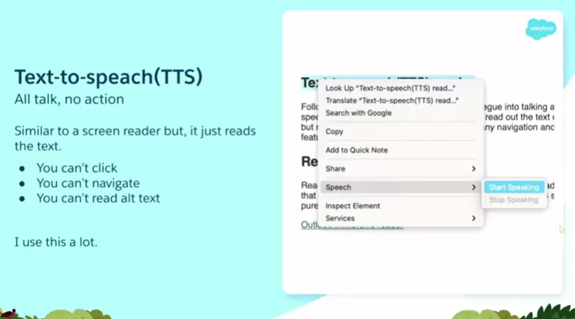
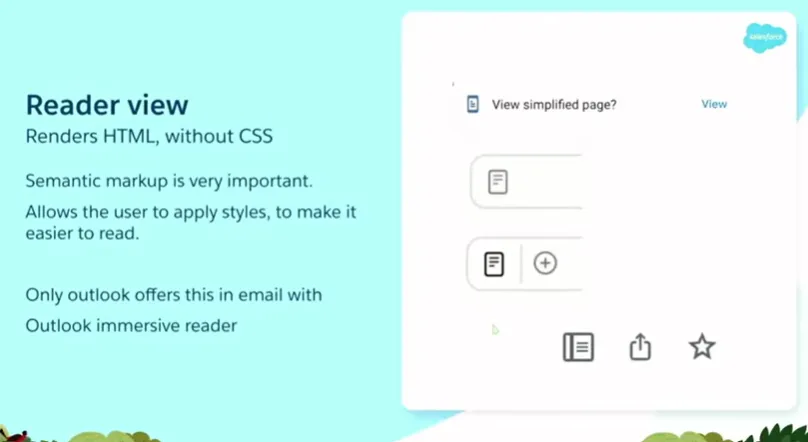

Accessible email is not a nice-to-have upgrade; it is the line between a working message and a broken one.
For Mark Robbins, it starts with empathy, clean markup, and a focus on real people behind every inbox. A software engineer at Salesforce and co-founder of the Email Markup Consortium, Mark shows how inaccessible emails silently exclude users, expose brands to legal risk, and leave money on the table, while simple code changes can completely transform the experience.
In this session, he delves into why accessibility matters morally, financially, and legally, what the numbers reveal about the low percentage of emails that pass basic checks, and which quick wins have the greatest impact. If you work in email marketing, product development, design, or a related field, this talk will encourage you to treat accessibility as core functionality, not an afterthought.
TL;DR
- Accessibility is core functionality, not a visual enhancement
- Fix critical blockers first, then worry about fancy design details
- Combine automated tools like Parcel with manual testing for real coverage
- Small, semantic improvements compound into huge gains for all subscribers
Mark Robbins: My name's Mark Robbins. I'm a software engineer at Salesforce. I am also a co-founder and co-admin of the new Email Markup Consortium, which is great and you should all come and join us. I'm on Twitter as MJ Robbins. I'm on email at mark.robbins@salesforce.com. If anybody else is still on email. I dunno, it's dead here.
So, accessibility. Accessibility in email. I started looking into this around 2015, I think, after being at a conference. I did a talk and I was really proud of it. I said, This is amazing. And then somebody came on afterwards and showed some accessibility stuff. I thought, right, I've just wasted everything. None of this means anything anymore because it's not accessible. Since then, I've been researching it and trying to learn more, and the entire industry has been discussing it more frequently. At that time, there was very little information. Now, there are some great speakers, numerous people sharing helpful information, and many excellent blog posts. Additionally, many conferences these days feature a discussion on accessibility. So we've come a long way, but we still have a long way to go. We're making progress, but we're not there yet. One of the key points I want to focus on today is understanding accessibility. Quite often, we say, You need to do this and you need to do that, and the answer is, Why? For accessibility. However, it is actually a bit more than that. We need to understand the reasoning. It's not just for accessibility; it's specifically designed for these use cases and the people and customers we serve.
Let's start with a brief recap. If anyone here has seen talks or read blogs about accessibility before, you may have heard some of this before, but it's good to reinforce the idea because we always need to promote accessibility. If this is a room of leaders, as the conference theme suggests, you may have decision-making power, but even then, you still need to sell accessibility to those higher up. If you have people working alongside you or underneath you, you still need to sell the idea. You need people to be passionate about this to get it done. Let's review some of the key selling points to convince people that accessibility is important.
First up: it is morally right. Do not discriminate against disabled people. It's simple. Most people get that. And while we're at it, please refrain from discriminating against any groups of people. Don't be a dick. This is obvious, and everybody generally gets on board with this. But then, capitalism. We have to make money. We can't simply do good things for the sake of doing good things. Financially, it's worth doing. If you discriminate against disabled people, they don't want to give you their money. Their friends and family don't want to give you their money. Anyone who witnesses discrimination is unlikely to give you their money. You might even be blocking people. If you're in a situation where you can't access something, but there are bugs and there are no other options, nobody else offers this thing that you want, you're trying to give your money, but the company is effectively batting the notes out of your hands, money going flying all over the place. So people have money and we can take it. 15% of the world's population lives with some form of disability. That's wrong. It's much higher. This is based on WHO statistics and is derived from logged and registered data, but the actual figure is likely much higher. In some countries, certain things are much more common. Look at dyslexia. I'm dyslexic. In the UK it's estimated at 15 to 20 percent. That's not correct, as 15% globally is incorrect. But even based on that number, it's still big. Globally, the market controls over 13 trillion dollars in annual disposable income. That's roughly £ 10.5 trillion. That's a lot of money. Take it. That's part of our job with capitalism, taking money from people to spend on yachts or whatever.
We have both the moral argument and the financial argument. But then somebody says, okay, but there are other things we could spend time on. Legally, it's the law. You need to do this. Most countries have laws addressing discrimination, with a specific focus on accessibility and digital accessibility, which encompass websites, communications, and documents. If you dig into the paperwork, you will find an email. Many people skim over it, but email counts as both a form of communication and a document, and it falls under the category of digital. If you are in the EU, there's the Web and Mobile Accessibility Directive of 2016, as well as member-state laws. In the UK there's the Equality Act 2010. In the US there's the ADA 1990. There are many more. I'll share a resources doc at the end with links to laws around the world. It's also not just about where you are; it's about where your customers are. What laws apply in the countries from which they open emails? All these laws tend to point back to the Web Accessibility Guidelines at the W3C, which is our benchmark. In the US in 2020, there were over 2,500 ADA lawsuits in federal courts. That's a big number. And more importantly, it represents a 12% increase from the previous year, with the trend continuing to rise. People are realizing they have rights and can be compensated if those rights aren't respected.
So, yes, we need to do it. But how do we prioritize it? We all have a lot on our plates. So I've created a short and incomplete list of lower-priority items. Accessibility should come before these things.
- Rounded corners. Yes, it's the border radius. One line of CSS and done. Or you can spend hours on VML and images, and bug fixing. Fix your accessibility instead.
- Box shadows. One line of CSS. Add a second line for Outlook. However, don't create massive, nested components to perfect your shadows. Do accessibility first. I love progressive enhancement and I advocate for it, but accessibility comes first.
- Animations. CSS animations, animated GIFs, WebP, PNGs —they're great, but be careful. Frame rates can negatively affect people. They are distracting. A static image is often safer, better, and faster, giving you time to address accessibility issues.
- Brand fonts. Great, but do you need them everywhere? Only use them where supported.
- Pixel-perfect layouts. Everyone signs off. It's ready. Then the designer says something is 19 pixels instead of 18, and now you lose two days fixing that. Not worth it before accessibility.
- Interactive email. I talk about this a lot. I love it. It is a high priority for me. But fix accessibility first. It's useless if it's not accessible.
The point is: your emails are fully functional without these enhancements. These are enhancements. Accessibility is the basics. If your emails are not accessible, your emails are broken. People miss this all the time. They spend time fixing enhancements while the basics are broken. And it benefits everyone. We can only ever be temporarily able-bodied. If we live long enough, our bodies begin to fail. Some people are born with disabilities, some acquire them through accidents or illness, and some simply age.
A use case: me. I'm getting older. It was my birthday yesterday. I've got arthritis. I'm having trouble closing this hand properly. I don't have a very good grip, and my finger hurts. If I spend all day on the computer typing and clicking, it starts to hurt a lot. So I do a lot more keyboard navigation these days and I use a lot more stuff one-handed. And it works, and it's really good. When it works, it's brilliant and flawless, and it's often quicker than using a mouse. But when it does not work, it is very noticeable and very frustrating. I avoid things where that is the case, where they do not support keyboard accessibility. That is for me. For somebody with a more serious disability, I have an owie finger. If someone is an amputee and only has one hand, that is a much more serious disability, but the requirement is the same. They still need to be able to use keyboard navigation.
From a situational point of view, if you are holding something while using the computer, say you are at a work event in Downing Street, you have a glass of wine in your hand and you are trying to do some work, then you have only one hand. So you are trying to do all your navigation that way. All these things have different cases and different scenarios, but the same requirements. That happens across the board. Additionally, my eyesight and hearing are deteriorating. I used to have really good eyesight, but now it is fading. Towards the end of the day, if I have been looking at a screen all day, I just do a little Command plus plus and zoom in a bit and I can read more. It is great and really easy, quite simple. A great user experience. And it works. But when it does not, it is very noticeable and very frustrating.
The team at Parcel tested over 6,000 emails with their email accessibility checker. Out of those 6,000 emails, 50 percent had at least one critical issue. Half of them. Half had a critical issue, the kind that should not be sent. Out of those 6,000 emails, two passed. Two emails out of 6,000. That is 0.03 percent of emails that were accessible. That is ridiculous, right? And this is not hard stuff. This is easy. This is Parcel. Some of you may already have accounts. Setting up an account is easy. Do it there. Then, if we go down to the bottom, the accessibility tab is there. Click that, check accessibility, and it will take a minute to run through. Here, we have two critical issues, five serious issues, and one moderate issue. This is really easy. I can click and see, okay, first one: images must have alt text. I can click a link and read more about it if I want to find out why images need alt text, if you don't already know. You can also click there, and it will take you to the line in the code where the bug is located, allowing you to fix it. This is a five-minute job. And two emails out of 6,000 have done this.Now, 6,000 is quite a small data set. What we are doing with the Email Markup Consortium, in association with Parcel, is obtaining a significantly larger dataset from companies worldwide, in various languages, including both large and small companies. We are starting to gather this large data set, and we will run these reports regularly so that we can provide you with a broader understanding of what things look like on a larger scale. We can break it down by market, and we will try to do this on an annual basis, so you can see the progress over time.
That is the future, hopefully. As I say, Parcel is a great tool. I use it for my accessibility checking. It is really good. I highly recommend it. However, there are others as well. Parcel is free to use, and you can set up an account very quickly, very easily. Accessible-email.org is also free. You do not need an account for that one. It does not do as many checks, and none of the others are as detailed, but they are all good. Any of these is worthwhile using. Litmus and Email on Acid are paid services, but they have accessibility checks built in. They are paid, but I am fairly certain that most of you have one or the other of these, so you can simply incorporate accessibility checks into your workflow.
But automating testing is only part of the solution. We also need to consider manual testing. It is very possible, and very easy, to pass an automated test and still not be accessible. For example, if I have an image, a nice image of a kitten, everyone likes kittens, hopefully, and I put the alt text as “car park,” the accessibility checker is going to look at that and say, yes, it is an image, yes, it has alt text, that is fine, passed. However, when a user arrives, it will display 'Car Park'. It is not a kitten. That is wrong. You are giving false information. That is why automated testing is limited. These tools are highly effective, and you should definitely utilize them; however, it's also essential to perform manual testing. It provides a better understanding of the experience some of your users are having.I will start by going through a few key points. I have some code up here. I will try not to discuss code too much. I love it, but not everyone does, and I understand that, and I have a problem. We will discuss the code briefly, but I'll try to cover it quickly. The idea is that I will share these slides afterwards. If you are a developer, you can use this. If you are not, you can pass it to the developers on your team. Language and direction attributes. Language attributes are great. They help with translation tools and with screen readers. If I have my email client set to English and someone sends me an email in French without setting a language, my screen reader will read everything as if it were in English. It will read it with an English accent and mispronounce all the words. It will sound like Del Boy trying to speak French, and it does not really work.
Direction attributes also help provide correct layouts for the language. Direction is either left-to-right or right-to-left. It becomes quite complicated if you try to support both, but the solution is actually quite simple. I will show you. Quick example: I have my email client set to a right-to-left language, and my email is in a left-to-right language, but I have not specified a direction for it. All the text is right-aligned, the punctuation is wrong, and the bullet points are on the wrong side of the list. All it needs is just a dir. That is it, the little direction attribute. Very simple, and it works. It is a really easy fix. Add it in, and it is quick and simple. It takes seconds.Next up, font sizes. In accessibility, we often discuss font size. What is a suitable font size for accessibility? Many people say 16 pixels, and that is true. Sixteen pixels is a good minimum font size to use. Some say 14 pixels. Sixteen pixels is a good font size. But what is better is medium or 1rem. What we are doing there is taking what the user has selected. In their OS settings, browser settings, and email client settings, users can set their preferred font size, and we can use that and base all our sizing on it. We do need to do a bit of a reset and set a minimum because Apple Mail, for some reason, thinks that 12 pixels is suitable for a default font size. They are wrong. Outlook is much better than Apple Mail. So we need to set a minimum. That is what this code is doing here. I won't go into it too much, but I will show you an example of how this works.
I have two email addresses: my primary email address and my secondary email address. In my good email, I have my Chrome settings open. Under appearance, I have font size. Medium is the default. I can put it up to Large, and everything gets bigger. I can put it up to very large, and everything gets bigger again. That is great. This is what we should be seeing. Our users can see this and it is much more readable, and it is what they asked for. We are giving them what they asked for. If we look at our bad example, something looks tiny. Otherwise, it is good. It is 16 pixels, very readable. However, when the user requests more, we need to provide it to them. I am just going to set it back to Medium, as that is my preferred setting.Next up, Zoom. There are several ways to zoom in on an email, including font size. You can adjust your screen resolution, and you can use browser zoom, which is a good temporary option. You do a little Control plus minus or Command plus minus. You can also use magnification tools. Some are built into operating systems by default, while others can be downloaded as additional software. It is like a small box on the screen that you move around, and it magnifies that part, much like a magnifying glass. The main thing is: do not disable the zoom. That sounds obvious, but at some point, probably to fix a bug, people started doing it. I have seen many templates that disable zoom with a meta viewport. This is the one I use, a good one to use, but if you have user-scalable=no, then you are saying users cannot scale the content, and that is really bad. That results in a critical error. There is no reason to do it.
That I have found, there are no bugs. Get rid of it. If you are using it, either set no viewport meta tag at all, which is fine and better than setting one that blocks. You are actively adding code to block your users. Do not do that. The other thing to think about with zoom is: make sure your content flows, and make sure it works without media queries. There is this idea in the email industry that 600 pixels is desktop and anything smaller than that is mobile. It is not true. You can have any size on the desktop.
I'd like to show you another example. Let us go to Outlook for this one. If we go to our bad one here, this is what our default view looks like. We have this little preview pane on the side. You can see that the email looks good. Now, if I zoom in a little bit, you can see it starts to shrink the email, making it really small, which is not good. What we actually want is a good example, where the content flows, and it just flows naturally. This is where we use a fluid template. Unfortunately, this becomes particularly annoying with Outlook.com, as it will still do this even if you use a fluid layout and a table as your wrapper. It is going to shrink down.
That is why I recommend using ghost tables. I know it is a pain. I know there are certain places and systems where you struggle to get them working, but I think it is worth the effort. Here we have it, small, and then you hover over and clic,k and then you get this annoying horizontal scrolling. That is Outlook.
You can achieve the same result by adjusting your resolution. This is a 15-inch MacBook. With the default settings and the preview window in Outlook, it is 749.5 pixels wide without any changes or adjustments. If I put it up one step, it is 509 pixels wide, so we are already under 600 pixels. If I continue to the full level, it is 337.5 pixels wide, which is smaller than many mobile phones. So we need to think about this. It is actually a desktop, but it is very narrow. And this is just the default display settings. This is not going into accessibility settings. If you go into accessibility settings, you can go a lot further than this.Next up, keyboard inputs. This is something I use a lot because of my owie finger, as it is called. The main thing with keyboards is ensuring that everything is clickable. All your interactive elements must receive focus and be interactable and clickable. Luckily, in email, generally this just means your a tags, and you do not really need to do anything extra. Just do not disable focus. Do not put a focus selector with outline: none. Do not do any of that. That is just going to break it for no reason. Most of the time, this is already there for us. If we are doing an interactive email, it gets more complicated because we still need to be able to use the keyboard to navigate it. We need to be able to see that focus and to interact with it. It is both possible and required. I do not have time to talk about it now. It is another couple of hours of chat. However, if you are interested, feel free to discuss it with me, and I can show you some examples.
One nice thing I thought of when I was putting these slides together is: if you are already using hover styles for elements, why not also use a focus style for your CTA? It is the same enhancement, and it just adds that extra little bit. I will show you another quick example. I have these ones in Safari. Here I have a little hover style. It simply removes the underline and applies a small text shadow. If I tab through it, you can see that happens there as well. Really simple. You can also see the large blue outline around my logo at the top, which is clickable.
One thing to consider is that if you use a blue background and then have a blue outline, which is the default color on most operating systems, it will appear blue. Consider changing that color, especially if you have a blue background, so you can adjust the focus color. Right, screen readers. When we think about accessibility, this is often the first thing people talk about, but there is so much more to it, as I have been showing you. There is much more than just screen readers. There is a significant overlap between things and solutions. Screen readers are great. They are incredible bits of technology. Has anybody tried using a screen reader before? That is good, a few of you. They are amazing. They are a bugger to get the hang of, but once you get it, it starts to make sense.
When I started playing around with it, I thought, 'Cool, it is talking; I can play with that, and maybe edit the speech to make it talk in the patterns I want.' Do not do that. It is fun to play around with, but never send anything or try to manipulate the speech, as there are numerous settings in screen reader preferences. You can adjust how much it pauses on punctuation. You can get it so it does not announce any emojis, so emojis are just ignored completely. That is something to think about if you are trying to convey a message with an emoji. So do not try to hack it. Just use it and try to understand the context. Read through your content. Make sure everything makes sense. If you are using an image and have alt text, ensure the alt text is meaningful. Ask: What is the purpose of this image? What message is it conveying? What is it adding to my content? Is that message still being conveyed to a screen reader user?
How are people using screen readers? The main ways people navigate come from the WebAIM Screen Reader User Survey of 2021. The main way people navigate with a screen reader is by using headings. It is crucial to include headings in your code and ensure they are structured correctly. 67.7 percent of people say this is the first navigation method they try. If headings are not available, they proceed to other methods. So headings are the most important thing we need to worry about.
Next up, Find on Page at 13.9%. The Find on Page feature is beneficial because it allows you to search and jump directly to content; however, this search function does not always capture alt text accurately. So your content needs to be in live text. If you put everything in images, alt text is not picked up by Find on Page, and people cannot find that content. 8.1% of people read all content, similar to reading a book from top to bottom in a linear manner. Links are 7.1%. We do not really have an equivalent in the visual world. The Links shortcut is great. It lists all links. I will show you an example momentarily. Finally, we have landmarks and regions at 3.2%. This is new technology. When I experiment with screen readers and try to understand them, I find these tools really useful. It is not yet implemented in many places, but I expect this number to increase.
Let's do a little demo. If we go into System Preferences, click on Accessibility, and then VoiceOver. Enable VoiceOver: “Accessibility. Example content has keyboard focus.” So it is reading out where we are. It is saying this is the email. It reads out the page title and similar information. If we go to the page: “Good access example content. Good access example email”. This is the email. This is because I have set it as an article with a label stating “Good accessibility example.” Now, we know what the title is and that we are in the correct section. If we go down and start reading some content: “Link image, email code. You are currently on the link. The click is a link. Press Control Option…”
This is saying that this is a link. It says it is an image, then it reads out the text. We do not need to add that information in our alt text. We do not need to say “this is an image of,” we do not need to say “this is a logo,” we do not need to say “picture,” and we do not need to say it is a link. We just keep it simple and short. People understand from the context that it is an image and that it is a link. Then the alt text tells them where the link is going or what the image is of, or both. If we go through a bit more. What that is saying is it is reading out the headings. We understand the headings and their importance. Visually, we have that scale, we can see bold, larger text and understand it as a heading. Now the screen reader user can understand that through the announcement. For the list, it tells us we are in a list, how many items are in the list, and whether we are on one of three, two of three, or all three. We know where we ar,e and it is very easy to navigate. It gives us a lot of context if we are not looking at it.
If you do not use lists, and I know many people put lists in tables. That will not happen. You will not get that context. It does not make sense. It does not work. We do not have the understanding that we have here. So if we look at the popular navigation methods, starting with headings. If I open the headings menu, all screen readers have an equivalent of this. VoiceOver is nice because it also displays a large visual, making it suitable for presentations. This is a list of all the headings on the page, along with their corresponding levels. So it is one, two, at the moment only one and two. But if you have more headings, you can nest down to heading level six. The idea is that if it is underneath something, for example, under the “Zoom” heading, I could have a heading level three for “Font size,” a heading level three for “Resolution,” and one for “Browser zoom.” We do not need to say “this is for resolution for Zoom for accessibility,” because we know it is accessibility from heading level one, and we know we are talking about Zoom from heading level two. We have that context and hierarchy, and it is essential that we maintain them.
If you start jumping around with heading levels, people get confused. It does not make sense. This is just a quick scan through and reading of the headings. If you are viewing a document on screen, you can see these headings, and many people do this: you read the headings, find the section you want, and then go to it. This is exactly what we are doing here.
So if we go into that: “Heading, Screen readers. In their own relationships, screen readers master content…” We can jump straight into our “Screen readers” section and start reading from there. We can go directly to the section that interests us. Next up I will show you the Links menu. This lists all the links on the page, along with the associated link text. The first one is the same as the image. It is reading out exactly the same thing. This is alt text. Alt text is your link text if your image is a link. Therefore, it is essential to include this information. It is essential to write it in a way that still makes sense without the context of the page, because here we do not know what else is happening on the page. We are only reading the links.
I will show you a bad example of this. If I switch to: “Link menù, Link, no-spoke.png.” So that is just reading out the file name. It is not a very descriptive file name. Quite often, ESPs or email clients will modify your file names, making them even less readable. So we cannot rely on that. It is important to use alt text. If we examine some of the other links, we have: “Link, WCAG reference.” Looking at the WCAG reference, that seems like it might be some good link text, because it tells us this is taking us to the WCAG reference page. But we are using this several times on the page. So, which section is it taking us to? It is just the same. So do not repeat your link text if it is going to different places. You cannot repeat the same link text for different targets. Give that extra information.
Additionally, we see phrases like “Find out more.” Find out more about what? I do not know where this is going to take me. It is important to add that context. If you are looking at it in the document, you can see a heading next to it, content, and images around it, providing context for what you are going to “find out more” about. However, we do not have that here. If you are struggling to write a copy here, you can add some hidden text inside. I recently wrote an article on my website about how to create visually hidden text that will be picked up by a screen reader but remains invisible on the screen. So, it could be “Find out more” as the visible text, and then hidden text like “about using screen readers,” so that the extra context is provided for screen readers and in the Links menu.
That is it for screen readers for now. If you are using a screen reader, it is likely built into your modern operating system. On a Mac or iOS device, you have VoiceOver, which I was just showing you. On Windows, Narrator is built in. On Android, it is TalkBack. The two most popular ones in use are JAWS and NVDA. Both of these are only on Windows. JAWS is quite expensive. NVDA is a free download. It would be beneficial to test all of these, but testing just one is sufficient for now. I do not want to overwhelm you.
If you want to explore options without purchasing devices, services are available. Assistive Labs is a great service. You can log in and remotely connect to different computers running different screen readers. I had an account. I don't have one at the moment, but I plan to get another one soon, hopefully. It is particularly useful for quickly checking things and identifying subtle differences. Much like email clients and browsers have subtle differences, screen readers also have differences. Email clients are not that subtle. Also, check out Deque University. They have a page about screen readers, which shows all the navigation tools, shortcuts, and explains how to use them. Screen readers can be quite challenging to use. It takes a minute to get your bearings. Getting started with the basics is fine, but understanding more complex concepts, especially on mobile, can be challenging. If you have that page open, you can reference it and understand how you are doing things. On mobile, for example, if you need to click a link, you have to double-tap. If you tap once, it tells you what it is, but you need to double-tap to activate the click. It took me a while to work out how to turn off the screen reader the first time I used it. So definitely check out those resources.Text-to-speech is another thing. This is the technology that screen readers are built upon. It is also the technology behind smart speakers and voice assistants. It takes text and turns it into speech, but this is just the basics. There are no clicks, no navigation, and it cannot read alt text. So you might think, what is the point of it? Nobody is going to use that. That is what I thought when I first looked at it. But I actually use this a lot now. In my day-to-day life, not just for testing. I am dyslexic. I struggle with reading. It takes a lot of processing power for me to read something. If I am trying to take in complex information while reading, I spend a lot of my energy and thought process on the act of reading, and I don't have enough left over to process the information and understand it. If I could have it read out to me, it would make it easier. Also, if there is a word you do not know, it is useful to say it out loud. I will show you an example. If I scroll down to my text-to-speech section and highlight it. Let us make it bigger as well. Look at that zoom. It is useful. What does that say? It says: “Following on from screen readers is good for talking about text-to-speech readers.” I have no idea what that is about. I mean, I do, I ran through it earlier in the hotel room, but this is for show. Then we click and go to Speech, Start speaking: “Following on from screen readers is a good segue into talking about text-to-speech readers.” Segue. Who thought that it was spelled like that? It makes no sense. But things like that are a real example. I had no idea what this was. So I did a search and found out. It is very useful. I only discovered this because I was conducting accessibility testing. Now that I have found it, I use it all the time in my day-to-day life.Another thing I use a lot is Reader View. This is more of a web-based thing, but it is also coming to email, and I hope it will eventually come to email more frequently. Currently, it is only in Outlook with Outlook Immersive Reader, but I expect other email clients to do it. I hope they do, because I think it is a really good enhancement. What it does is take your code and your HTML, strip all the styles off it, and then allow the user to apply their own styles to make it more readable for them. I use this a lot on websites, particularly news websites and especially local news, as well as on recipe sites where pop-ups and other elements clutter the page, making it difficult to find the actual content. Go into Reader View and you can.
Reader View typically appears as a small pop-up or icon. The top one in my slide is Android on Chrome. Sometimes it is in the address bar as an icon. It depends on the browser, but you can switch into Reader View. Let us have a quick look. In Safari, we would expect it to show up, but since this is a poor example, there is not enough sensible markup for Reader View to understand and process, so there is no benefit. If we examine a good example, we have enough context to explain it. We have that little icon there. I click on it, and you can see it converts the email into Reader View. It is very easy to read. We can adjust the styles. We can change the colors, adjust the font size, and make it bigger or smaller. We can change the fonts to whatever your reading preferences are. It makes it a lot easier to read and process this information. This is amazing, right? It just fixes accessibility. But it only works when we use the correct markup. If we hadn't used a list, we wouldn't have bullet points. If we did not use list items or headings, we would not have that heading structure. It does not work unless we use the correct code.
There is no standard in email. This is one of the things we are doing with EMC. There are standards: HTML is a standard. We follow that. We follow the WCAG standards, and then we hack around so it sort of works in email. But it is important stuff. I will show you the Outlook Immersive Reader. Let us go to the good one so it actually works. If we go to View and select “Show in Immersive Reader,” it takes a minute to load.
Annoyingly, this does not save your settings. It always defaults back to this setting. I find this harder to read. I need to reduce the font size, and the spacing is too much for me. I cannot read that, so I will close that down a bit. But again, same thing: we can put it into Comic Sans, everyone’s favorite font. We can adjust the colors, apply a different theme, or add a yellow background. You may be able to see it better on this screen, and it will be easier to read. It takes that content and makes it more readable depending on the user’s personal preferences or settings. Another cool feature of this is that if I click on a word, it displays little pictograms to explain its meaning. I think that is quite a nice touch. And you can read: “Language of page” like that as well, just built in. So yes, a really useful tool. Only in Outlook at the moment. I think it is available in all versions of Outlook, but I would really like to see other email clients implementing this feature, and I expect they will. One of the things is: if we keep sending bad markup, they have no incentive to, because nobody is going to read it. It is not useful for people. If we send well-marked and accessible emails, then they can develop these tools to improve things for all our users. Let us go back.
So, my main takeaway from today is: care about your users. Give a shit about them. Care. Show some empathy. Putting all this together is a big task, and I understand that. It is a huge amount of stuff, and I am only scratching the surface. I am only showing a few small examples. There is so much more to it. So it can feel like an impossible task, so why bother?
However, when you break it down, most of these tasks are actually quite small, quick, and easy to fix. It is just “add a little tag here,” “put a little fix there,” “adjust the color,” “adjust the font size,” “add some spacing.” Many small things, but they add up to big wins. A small improvement that is very quick for you can have a huge impact on others. So, what I want from all of you is a promise. I would like you to return to work next week and ensure that your team incorporates at least one accessibility enhancement. It does not have to be anything big. If you are not doing it already, QA is the most important thing. Do a little bit of testing. It could be automated testing. If you are already doing that, add some manual testing. Use that to log issues. You don't even need to make any changes yet. Just do the test. It takes seconds. These automated tests take no time at all. Then log the issues. Later on, you can go and fix them.
That is what you are doing in your first week: logging them. Then, further down the line, fix them. If you are already doing that, then start fixing some more things. We are all doing a bad job. We are all terrible, terrible people. Two out of 6,000 emails were accessible. That is not good enough. It is ridiculous. Half of them have critical issues. It's very easy: just one little thing you can fix. Just fix the critical issues. It is the basics, and they are not complicated things. This is like adding alt text.
Thank you.